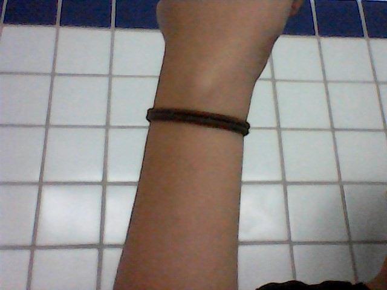
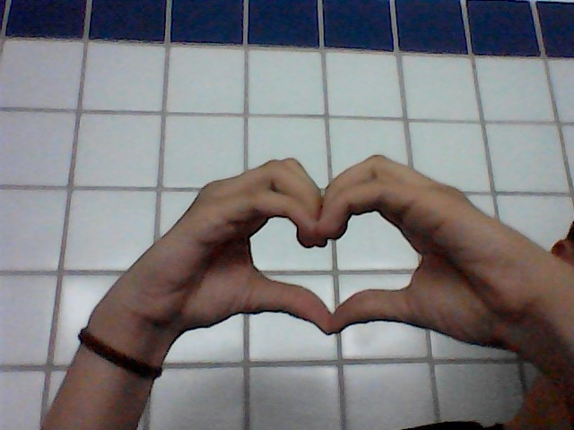
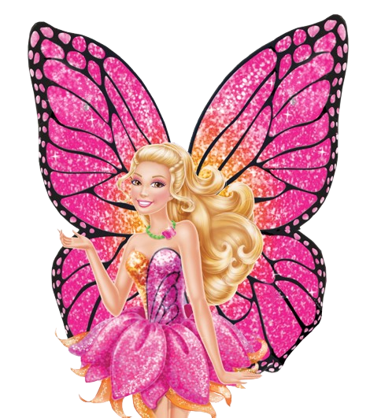

Rute, eu me sinto tão feliz por você ser do jeito que você é, há tantas coisas boas e incríveis que eu
posso falar sobre,
mas eu sinto que msm se falasse tudo isso ainda não seria o suficiente pra te dizer o tanto que vc é
especial, mas mesmo assim eu vou adorar te falar tudo isso;
Rute Noberto, você é: linda, carinhosa, fofa, bonita, inteligente, chique, educada, gentil,
responsável, engraçada, cuidadosa, esforçada, honesta, compreensiva,
determinada, cativante, expontânea, carismática, Inspiradora, meiga e mais milhares de coisas boas
que em palavras seriam difíceis de te descrever.
E sobre todas as coisas que noto em vc?
lá vai tbm:
Rute, eu amo tudo em vc, amo o seu cabelo, amo sua bochecha, amo os seus olhos, amo quando vc está
falando com alguém e simsplesmente junta as suas mãos e parece que está julgando a pessoa,
amo o seu estilo, amo o jeito como vc mexe no seu cabelo, amo sua risada, amo sua voz,
amo quando conversamos, amo quando vc tem um assunto pra me contar, amo quando vc me dá vergonha,
amo quando vc se preocupa comigo, amo me preocupar com vc tbm,
amo falar sobre vc, amo pensar em vc, amo quando sei que vc está feliz, amo quando as vezes a gente
está conversando por ligação e eu posso só ficar quietinho escutando tudo o que vc tem a dizer, amo
quando vc me fala sobre como foi o seu dia...
...Mas resumindo tudo isso, eu te amo, Rute, em cada detalhe seu e em cada coisa que te faz ser quem
vc é.
Ahhh, a possibilidade desse "programa" é tão grande que tirei umas duas fotos e coloquei aqui vey...


Falando nas fotos, eu tô usando a xuxa sempre vey, Muito Obrigado, eu sinto que é um jeito de
poder me conectar com vc msm estando longe.
Rute, e acho que vc já percebeu que eu sou meio "meloso" quando o assunto é trata sobre gostar ou
amar, né?
por isso eu sempre penso nessa música desde o dia que vc me contou sobre:
Rute, eu penso em ser "exagero" tudo isso que eu falo, mas eu amo tanto te falar isso tudo, vc é a pessoa com quem eu posso ser mais honesta possível,
eu jamais vou esconder nada de vc e espero que vc possa confiar em mim tbm, pois seria uma honra, ent pode sempre contar cmg.
Agr acho que eu quero entrar em um tópico que pode ser meio vergonhoso pra nós dois...
Clica se vc quiser saber vey:
